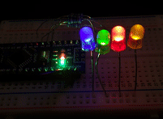
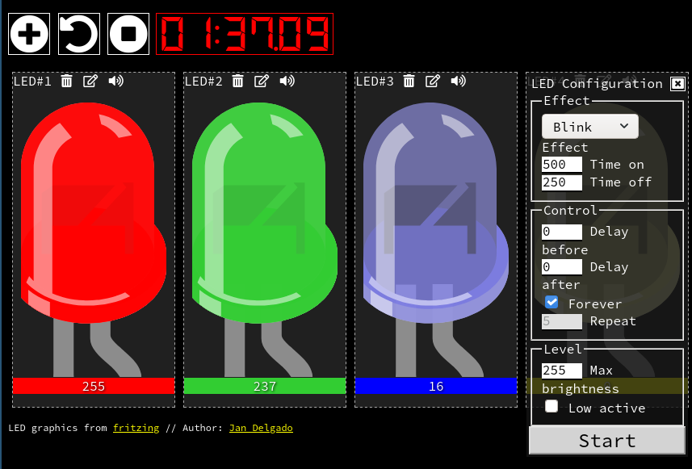
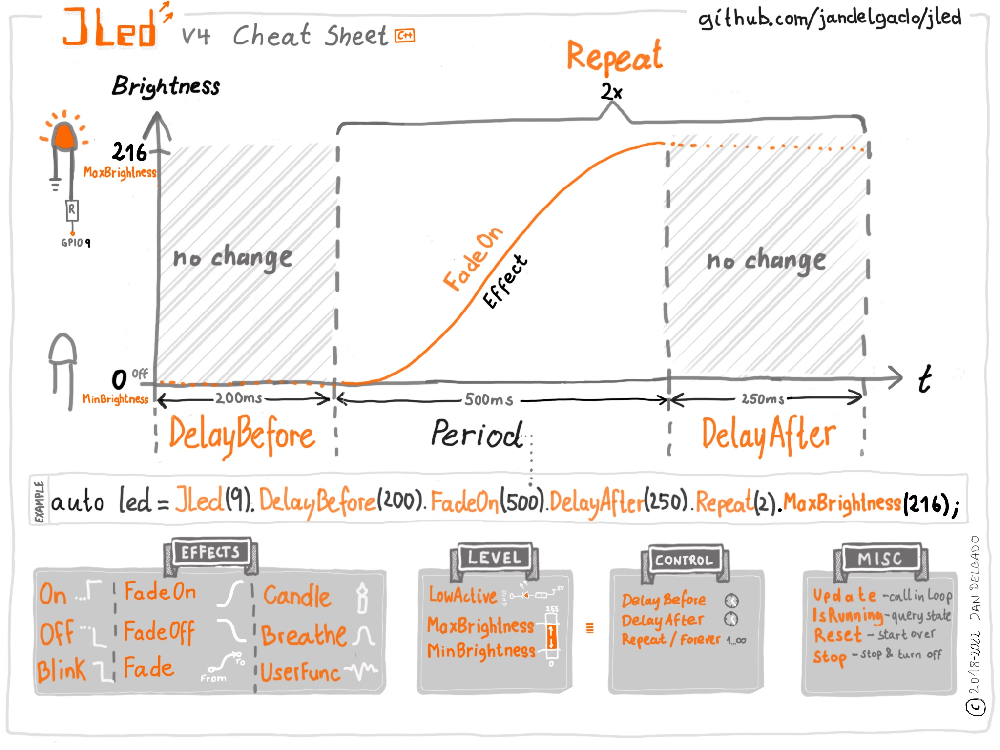

JLed - Advanced LED Library
Version: master
JLed is an embedded C++ library to control LEDs. It uses a non-blocking approach and can control LEDs in simple (on/off) and complex (blinking, breathing, RGB color, and more) ways in a time-driven manner.
JLed was featured on Hackaday and someone made a video tutorial for JLed. Thanks!
Preferring Python? Check out jled-circuitpython, a JLed implementation for CircuitPython and MicroPython.
| JLed in action | Interactive JLed playground |
|---|---|
 |
 |
Example
// breathe LED (on gpio 9) 6 times for 1500ms, waiting for 500ms after each run
#include <jled.h>
auto led_breathe = JLed(9).Breathe(1500).DelayAfter(500).Repeat(6);
void setup() { }
void loop() {
led_breathe.Update();
}
Table of Contents
- Features
- Cheat Sheet
- Installation
- Arduino IDE
- PlatformIO
- Usage
- JLed vs JLedHD
- Output pipeline
- Effects
- Delays and repetitions
- State functions
- Pause and Resume
- Misc functions
- Controlling a group of LEDs
- JLedRGB
- JLedRGBHD
- Framework notes
- Platform notes
- Resolution and the
Brightnesstype - ESP8266
- ESP32
- STM32
- Raspberry Pi Pico
- Example sketches
- Building examples with PlatformIO
- Building examples with the Arduino IDE
- Extending
- Support new hardware
- Unit tests
- Contributing
- JLed 5.0 migration guide
eStopModerenamed toeIdleMode- JLedSequence to JLedGroup migration
Update(int16_t* pLast)removed, useUpdateResultnow- Custom brightness evaluators:
BrightnessEvaluatoris now a template kFullBrightness/kZeroBrightness→ValueTraits<T>- Custom HALs and
TJLedsubclasses: Clock and Value are now explicit Candle()gainscolor_on/color_off, which come firstFadeOn()parameter order:tomoved beforefrom- FAQ
- How do I check if a JLed object is still being updated?
- How do I restart an effect?
- How do I change a running effect?
- Author and Copyright
- License
Features
- non-blocking
- effects: simple on/off, breathe, blink, candle, fade-on, fade-off, user-defined (e.g. morse)
- high resolution (up to 16-bit) effects, if the hardware supports it with
JLedHD(since JLed 5.0) - full color effects on a three-pin RGB LED with
JLedRGB(since JLed 5.0) - supports inverted polarity of LED
- easy configuration using fluent interface
- can control groups of LEDs sequentially or in parallel
- Portable: Arduino, ESP8266, ESP32, Mbed, Raspberry Pi Pico and more platforms compatible, runs even in the browser
- supports Arduino, mbed, Raspberry Pi Pico and ESP32 ESP-IDF SDK's
- well tested
Cheat Sheet

Installation
Arduino IDE
In the main menu of the Arduino IDE, select Sketch > Include Library >
Manage Libraries... and search for jled, then press install.
PlatformIO
Add jled to your library dependencies in your platformio.ini project file,
e.g.
...
[env:nanoatmega328]
platform = atmelavr
board = nanoatmega328
framework = arduino
lib_deps=jled
...
Usage
First, the LED object is constructed and configured, then the state is updated
with subsequent calls to the Update() method, typically from the loop()
function. While the effect is active, Update returns true, otherwise
false. The return value is actually a richer UpdateResult that is also
usable as a bool; see Lifecycle events for the full API.
The constructor takes the pin, to which the LED is connected to as
the only argument. Further configuration of the LED object is done using a fluent
interface, e.g. auto led = JLed(13).Breathe(2000).DelayAfter(1000).Repeat(5).
See the examples section below for further details.
JLed vs JLedHD
JLed uses 8-bit brightness internally (uint8_t, 0-255), while JLedHD ("high-definition")
uses 16-bit (uint16_t, 0-65535). Both share the same API and effects.
Use JLedHD on long fade or breathe effects where the 256 discrete steps of JLed can
produce visible "staircase" banding, especially at low brightness. JLedHD eliminates this by
giving the HAL up to 65536 values to work with. The HAL then maps them to the native PWM
resolution of the platform (e.g. 13-bit on ESP32, 16-bit on Pico/Teensy).
Use JLed for simple on/off, blink or fast fade/breathe effects. Here the extra resolution
is not visible, and 8-bit uses half the memory per brightness value. Also note that on some
platforms (see the table below) JLed and JLedHD resolve to the same HAL width (e.g. standard
8-bit Arduino boards), so JLedHD has no practical benefit there.
Note: You cannot mix
JLedandJLedHDobjects in the same sketch when both map toArduinoHalwith different bit widths, becauseanalogWriteResolution()is a global setting. See theArduinoHalnote below. The same applies toJLedRGBandJLedRGBHD, which are built on the very same two HALs, and to any mix of the four (e.g.JLedwithJLedRGBHD).
Output pipeline
First the configured effect (e.g. Fade) is evaluated for the current time
t. JLed internally uses either 8-bit (JLed, uint8_t, 0-255) or 16-bit
(JLedHD, uint16_t, 0-65535) values to represent brightness. Next, the value
is scaled to the limits set by MinBrightness and MaxBrightness (if set).
When the effect is configured for a low-active LED using LowActive, the
brightness value will be inverted. Finally the value is passed to the hardware
abstraction, which scales it to the native PWM resolution of the platform (e.g.
13 bits for ESP32 JLedHD, 16 bits for Pico JLedHD). The brightness value is
then written out to the configured GPIO.
+---------+ +---------+ +---------+ +---------+ +-------+
|Evaluate | |Scale to | |Optional | |Scale for| |Write |
|effect(t)|--->|[min,max]|--->|Invert |--->|Harware |--->|to GPIO|
+---------+ +---------+ +---+-----+ +---------+ +-------+
Effects
Static on and off
Calling On(uint16_t period=1) turns the LED on. To immediately turn a LED on,
make a call like JLed(LED_BUILTIN).On().Update(). The period is optional
and defaults to 1ms.
Off() works like On(), except that it turns the LED off, i.e., it sets the
brightness to 0.
Use the Set(Brightness brightness, uint16_t period=1) method to set the
brightness to a specific value. The type of brightness depends on the
instantiation: uint8_t (0-255) for JLed, and uint16_t (0-65535) for
JLedHD. For example, Set(255) is equivalent to calling On() and Set(0)
is equivalent to calling Off() when using JLed; with JLedHD the full
range is Set(65535) for full brightness.
To write brightness values that work with both JLed and JLedHD without
change, use jled::Percentage or the _pct user-defined literal (requires
using jled::operator""_pct). Percentage converts implicitly to the correct
range for whichever brightness type is active:
using jled::operator""_pct;
JLed led = JLed(13) .Set(75_pct); // 75 % of 255 → 191
JLedHD ledHD = JLedHD(13).Set(75_pct); // 75 % of 65535 → 49151
// Equivalent explicit form:
JLed led2 = JLed(13) .Set(jled::Percentage(75));
Technically, Set, On and Off are effects with a default period of 1ms, that
set the brightness to a constant value. Specifying a different period has an
effect on when the Update() method will be done updating the effect and
return false (like for any other effects). This is important when for example
in a JLedGroup the LED should stay on for a given amount of time.
Static on example
#include <jled.h>
// turn builtin LED on after 1 second.
auto led = JLed(LED_BUILTIN).On().DelayBefore(1000);
void setup() { }
void loop() {
led.Update();
}
Blinking
In blinking mode, the LED cycles through a given number of on-off cycles, on-
and off-cycle durations are specified independently. The builder method has the
following signature:
Blink(uint16_t duration_on, uint16_t duration_off, uint8_t n, Brightness color_on, Brightness color_off)
duration_on,duration_off- the on- and off-cycle durations in ms.n- the number of on-off cycles. The default value is 1.color_on,color_off- the values written during the on- and off-cycle. They default to fully on and fully off, i.e. the classic blink. Pass them to blink between two brightness levels instead, e.g.Blink(250, 250, 1, 200, 20).
For the effect to work correctly, the following must hold true:
0 < (duration_on+duration_off)*n <= 65535.
Blinking example
#include <jled.h>
// blink internal LED 3 times: 250ms on, 500ms off. Then wait 1000ms. Repeat forever.
auto led = JLed(LED_BUILTIN).Blink(250, 500, 3).DelayAfter(1000).Forever();
void setup() { }
void loop() {
led.Update();
}
Breathing
In breathing mode, the LED smoothly changes the brightness using PWM. The
Breathe() method takes the period of the effect as an argument.
Breathing example
#include <jled.h>
// connect LED to pin 13 (PWM capable). LED will breathe with period of
// 2000ms and a delay of 1000ms after each period.
auto led = JLed(13).Breathe(2000).DelayAfter(1000).Forever();
void setup() { }
void loop() {
led.Update();
}
It is also possible to specify fade-on, on- and fade-off durations for the
breathing mode to customize the effect:
Breathe(uint16_t duration_fade_on, uint16_t duration_on, uint16_t duration_fade_off, Brightness from, Brightness to)
// LED will fade-on in 500ms, stay on for 1000ms, and fade-off in 500ms.
// It will delay for 1000ms afterwards and continue the pattern.
auto led = JLed(13).Breathe(500, 1000, 500).DelayAfter(1000).Forever();
from and to are the values the effect breathes between; they default to fully off and
fully on. Pass them to breathe within a narrower band, e.g.
Breathe(500, 1000, 500, 20, 200).
Candle
In candle mode, the random flickering of a candle or fire is simulated.
The builder method has the following signature:
Candle(Brightness color_on, Brightness color_off, uint8_t speed, uint8_t jitter, uint16_t period, uint16_t offset)
color_on- the color the flicker rises to at full intensity. Defaults to fully on, which is the previous behaviour.color_off- the color the flicker dims down to at zero intensity. Defaults to fully off (black), which is the previous behaviour. Pass a non-black color to flicker between two colors instead of towards black, e.g.RGBColor<uint8_t>red and yellow for a JLedRGB, or a dim base brightness for a plain JLed.speed- controls the speed of the effect. 0 for fastest, increasing speed divides into halve per increment. The default value is 6.jitter- the amount of jittering. 0 none (constant on), 255 maximum. Default value is 15.period- Period of effect in ms. The default value is 65535 ms.offset- a time offset in ms. By default each LED derives its offset from its own memory address, so multiple LEDs with the same parameters automatically flicker independently without any configuration. Pass 0 to have all LEDs run in sync, or any other value to set a specific pattern.
Note that the automatic offset is derived from the object's address at the moment
Candle() is called, so calling it on a temporary inside a builder-chain expression
(e.g. JLed(pin).Candle()) can occasionally hand two LEDs the same offset, when their
temporaries happen to share a stack slot. Construct named LED objects and call Candle()
on them if independent flicker matters.
The default settings simulate a candle. For a fire effect for example
call the method with Candle(255 /*color_on*/, 0 /*color_off*/, 5 /*speed*/, 100 /*jitter*/).
Candle example
#include <jled.h>
// Candle on LED pin 13 (PWM capable).
auto led = JLed(13).Candle();
void setup() { }
void loop() {
led.Update();
}
FadeOn
In FadeOn mode, the LED is smoothly faded on to 100% brightness using PWM. The
FadeOn() method takes the period of the effect as an argument.
The brightness function uses an approximation of this function (example with period 1000):
FadeOn example
#include <jled.h>
// LED is connected to pin 9 (PWM capable) gpio
auto led = JLed(9).FadeOn(1000).DelayBefore(2000);
void setup() { }
void loop() {
led.Update();
}
FadeOff
In FadeOff mode, the LED is smoothly faded off using PWM. The fade starts at
100% brightness. Internally it is implemented as a mirrored version of the
FadeOn function, i.e., FadeOff(t) = FadeOn(period-t). The FadeOff() method
takes the period of the effect as argument.
Fade
The Fade effect allows to fade from any start value from to any target value
to with the given duration. Internally it sets up a FadeOn or FadeOff
effect and MinBrightness and MaxBrightness values properly. The Fade
method take three arguments: from, to and duration.
Fade example
#include <jled.h>
// fade from 100 to 200 with period 1000
auto led = JLed(9).Fade(100, 200, 1000);
void setup() { }
void loop() {
led.Update();
}
User provided brightness function
It is also possible to provide a user defined brightness evaluator. The class must be derived from
the jled::BrightnessEvaluator<Value> template class and implement two methods:
Value Eval(jled::period_t t) const- the brightness evaluation function that calculates a value for the given timet(tis always in[0, Period()), andperiod_tisuint16_t). The value must be returned as an unsigned byte, where 0 means LED off and 255 means full brightness ifValueisuint8_t, as an unsigned int between 0 and 65535 ifValueisuint16_t, and as anRGBColor<T>forJLedRGB/JLedRGBHD.uint16_t Period() const- period of the effect.
All time values are specified in milliseconds.
The user_func example demonstrates a simple user provided brightness function, while the morse example shows how a more complex application, allowing you to send morse codes (not necessarily with an LED), can be realized.
User provided brightness function example
The example shows how to implement a user defined effect that works with all LED
types, i.e. JLed, JLedHD, JLedRGB and JLedRGBHD. Instead of computing a
value directly, which only works for the scalar types, it uses the value type's
jled::ValueTraits<Value>.
template<typename Value>
class UserEffect : public jled::BrightnessEvaluator<Value> {
using Traits = jled::ValueTraits<Value>;
public:
Value Eval(jled::period_t t) const override {
// this function changes between OFF and ON every 250 ms.
return (t/250)%2 ? Traits::kOnColor() : Traits::kOffColor();
}
// duration of effect: 5 seconds.
uint16_t Period() const override { return 5000; }
};
Delays and repetitions
Initial delay before effect starts
Use the DelayBefore() method to specify a delay before the first effect starts.
The default value is 0 ms.
Delay after effect finished
Use the DelayAfter() method to specify a delay after each repetition of
an effect. The default value is 0 ms.
Repetitions
Use the Repeat() method to specify the number of repetitions. The default
value is 1 repetition. The Forever() method sets to repeat the effect
forever. Each repetition includes a full period of the effect and the time
specified by DelayAfter() method. Use IsForever() to query whether the
effect is set to repeat forever.
State functions
Update
Call Update() or Update(uint32_t t) to periodically update the state of
the LED. Update() is a shortcut to call Update(uint32_t t) with the
current time in milliseconds.
Update() returns an UpdateResult, which is usable directly as a bool:
true while the effect is active, false once it finished.
UpdateResult also carries the value (brightness or color) written to the LED
this tick:
auto r = led.Update();
if (r.HasValue()) {
// the LED was updated with the value now stored in r.Value()
auto lastVal = r.Value();
...
}
See last_brightness example for a working example.
Beyond brightness, UpdateResult exposes lifecycle events, see
Lifecycle events below.
Lifecycle events
UpdateResult also reports which phase transitions happened on this
Update() call, so you can react inline instead of polling the return value
and tracking state yourself:
These are inspected per Update() call, not registered once: you re-attach
the callbacks (or read the predicates) on the UpdateResult each time you call
Update() in your loop. There is no stored handler, and a bare Update() with
no callbacks costs nothing beyond the small UpdateResult value it returns.
Each event has both a predicate (Is<Event>(), a state query answering "did this
happen on this tick?") and a fluent callback (an On<Event>(cb) event hook). The
two spell the same event slightly differently by design: IsStarted() pairs with
OnStart(), IsRepeatStarted() with OnRepeatStart(), IsEnteringDelayAfter()
with OnEnterDelayAfter().
| Query | Fires when |
|---|---|
IsStarted() |
once per run, on the first Update() call (or the first after Reset()) |
IsFirstOutput() |
once per run, on the first actual output tick |
IsRepeatStarted() |
once per repetition, including the first |
IsEnteringDelayAfter() |
once per repetition that has a DelayAfter(), on entry to that phase |
IsDone() |
once, when the effect stops: all repetitions complete, or Stop() is called |
More than one of these can be true on the same Update() call. E.g., an
effect with the default duration = 1 (as used by On(), Off() and
Set()) starts and finishes on its one and only call, so IsStarted(),
IsFirstOutput(), IsRepeatStarted() and IsDone() are all true together.
Each event also has a matching fluent callback, so you can react at the call
site without an if:
led.Update()
.OnStart([](JLed& l) { Serial.println("started"); })
.OnFirstOutput([](JLed& l) { Serial.println("first output"); })
.OnRepeatStart([](JLed& l) { Serial.println("iteration"); })
.OnEnterDelayAfter([](JLed& l) { l.MaxBrightness(64); })
.OnDone([](JLed& l) { l.Reset(); });
Callbacks are template parameters (lambdas or function pointers) and they run synchronously inline, in the order chained.
Common patterns:
// turn led off when effect is done, regardless of last state
void loop() {
led.Update().OnDone([](JLed& l) { l.WriteRaw(0); });
}
// turn led off when in the delay-after phase
void loop() {
led.Update().OnEnterDelayAfter([](JLed& l) { l.WriteRaw(0); });
}
// turn second LED led2 on, if led is in delay-after phase, else it is off
void loop() {
led.Update().OnRepeatStart([](JLed&) { led2.On().Update(); });
.OnEnterDelayAfter([](JLed& l) { led2.Off().Update(); });
}
IsRunning
IsRunning() returns true if the current effect is running, else false.
Reset
A call to Reset() brings the JLed object to its initial state. Use it when
you want to start-over an effect.
Immediate Stop
Call Stop() to immediately turn the LED off and stop any running effects.
Further calls to Update() will have no effect, unless the Led is reset using
Reset() or a new effect is activated. By default, Stop() sets the current
brightness level to MinBrightness.
Stop() takes an optional argument mode of type JLed::eStopMode:
- if set to
JLed::eStopMode::KEEP_CURRENT, the LEDs current level will be kept - if set to
JLed::eStopMode::FULL_OFFthe level of the LED is set to0, regardless of whatMinBrightnessis set to, effectively turning the LED off - if set to
JLed::eStopMode::TO_MIN_BRIGHTNESS(default behavior), the LED will set to the value ofMinBrightness
// stop the effect and set the brightness level to 0, regardless of min brightness
led.Stop(JLed::eStopMode::FULL_OFF);
Pause and Resume
Call Pause() to freeze the current effect. While paused, Update() returns true but
does not advance the effect. Call Resume() to continue from the exact point where it was
paused. IsPaused() returns true while the effect is frozen.
Pause() accepts an optional mode argument of type jled::eIdleMode (same values as
Stop()) that controls the LED's brightness during the pause. The default is
jled::eIdleMode::TO_MIN_BRIGHTNESS, which sets the LED to its configured minimum
brightness. Use jled::eIdleMode::KEEP_CURRENT to hold the last rendered value, or
jled::eIdleMode::FULL_OFF to force the LED off regardless of MinBrightness.
Pausing before an effect has started is valid, the effect will not start until
Resume() is called.
auto led = JLed(9).Breathe(2000).Forever();
void loop() {
if (buttonPressed()) {
if (led.IsPaused()) {
led.Resume();
} else {
led.Pause();
}
}
led.Update();
}
JLedGroup also supports Pause() and Resume(), which propagate to all member LEDs so
the entire group freezes and resumes in sync.
Misc functions
Low active for inverted output
Use the LowActive() method when the connected LED is low active (common anode). All output
will be inverted then. Call LowActive(false) to switch back to normal (high active) output.
Use IsLowActive() to query whether the LED is configured as low active.
Inversion is performed by the HAL layer: on Raspberry Pi Pico, and on ESP32 with ESP-IDF
≥ 4.4, it is done in hardware (a PWM-CSR polarity bit / the LEDC driver's output_invert
flag is set when LowActive() is called). InvertableHal is a software fallback
used on ESP-IDF < 4.4 and every other bundled platform.
Minimum- and Maximum brightness level
The MaxBrightness(Brightness level) method is used to set the maximum
brightness level of the LED, where Brightness is uint8_t for JLed and
uint16_t for JLedHD. A level of full brightness (255 / 65535, the default)
is maximum output, while 0 effectively turns the LED off. In the same way, the
MinBrightness(Brightness level) method sets the minimum brightness level. The
default minimum level is 0. If minimum or maximum brightness levels are set,
the output value is scaled to be within the interval defined by
[minimum brightness, maximum brightness]: a value of 0 will be mapped to the
minimum brightness level, and a value of full brightness will be mapped to the
maximum brightness level.
To specify levels independently of the brightness type, use jled::Percentage
or the _pct literal (e.g., led.MaxBrightness(50_pct);).
The Brightness MaxBrightness() const method returns the current maximum
brightness level. Brightness MinBrightness() const returns the current
minimum brightness level.
WriteRaw
WriteRaw(val) writes a brightness value directly to the hardware, applying
LowActive() inversion the same way effects normally do, but bypassing the
effect state machine entirely. "Raw" refers to the state machine only, not to
the value: val is an ordinary effect-space value (a jled::RGBColor<uint8_t>
color on JLedRGB) and goes through the same conversion an effect's output
does. It does not touch the effect configuration
or any other JLed state. Use it from a lifecycle callback to force an output
that the effect itself would not produce, e.g. turning the LED off during
the DelayAfter() phase, which otherwise holds the last computed brightness
for its whole duration:
JLed led = JLed(LED_BUILTIN).FadeOn(500).DelayAfter(1000).Repeat(5);
void loop() {
led.Update().OnEnterDelayAfter([](JLed& l) { l.WriteRaw(0); });
}
Since WriteRaw() leaves the effect configuration untouched, the next
repetition's FadeOn() runs unaffected.
Controlling a group of LEDs
The JLedGroup class controls an array of LEDs of one concrete type, in parallel or
sequentially, written inline:
JLed leds[] = {JLed(4).Blink(750, 250).Repeat(2),
JLed(3).Breathe(2000),
JLed(5).FadeOff(1000).Repeat(2)};
auto group = JLedGroup::Parallel(leds).Repeat(5);
void setup() { }
void loop() {
group.Update();
}
Use the static factory methods JLedGroup::Parallel(leds) and
JLedGroup::Sequential(leds) to create a group. The array size is deduced
automatically. A runtime-size overload is also available:
JLedGroup::Parallel(leds, n). JLedGroup provides the following methods:
Update()- updates all elements. Returns aGroupUpdateResult, usable directly as abool:truewhile the group is running,falseonce it has finished. Also exposesIsStarted()/IsDone()andOnStart()/OnDone()for group-level lifecycle events, see Group lifecycle events below.Repeat(n)- plays the groupntimes. Default is 1.Forever()- plays the group indefinitely.Stop(mode = jled::eIdleMode::TO_MIN_BRIGHTNESS)- stops all elements immediately.modecontrols the final brightness of each LED, identical toJLed::Stop(mode). Further calls toUpdate()have no effect.Reset()- resets all elements and restarts the group from the beginning (the beginning of the currently configured direction, see below). Fluent: returnsJLedGroup&.Reverse()- toggles sequential playback direction.Sequentialmode only and a no-op inParallelmode. See Reversing and bouncing a sequential group.Skip()- advances the sequence cursor by one step in the current direction without playing the skipped element.Sequentialmode only, a no-op inParallelmode.IsReversed()- current playback direction,falseis forward (the default).
JLedHDGroup is the JLedHD equivalent of JLedGroup. A user-defined LED type
needs just a matching alias:
using MyLedGroup = TJLedGroup<JLedClockType, MyLedType>;
Mixing different LED types (resolutions, nested groups, user-defined types) in one group needs
JLedRefGroup, see
When to use what? below.
Group lifecycle events
GroupUpdateResult is returned by the Update() method of the group and reports
these group-level events, analogous to JLed's
Lifecycle events but scoped to the group as a whole:
| Query | Fires when |
|---|---|
IsStarted() |
once per run, on the first Update() call (or the first after Reset()) |
IsDone() |
once, when the group finishes: all repetitions exhausted, or Stop() is called |
IsRepeatStarted() |
once per repetition, including the first: coincides with IsStarted() on the first, and fires again each time a full pass through the group completes and another repetition follows (Repeat(n>1)/Forever()). Independent of Parallel/Sequential mode |
IsElementEnter() |
Sequential groups only: an element became active this tick, the first element on start or the next element on a handoff. Never fires in Parallel mode |
IsElementLeave() |
Sequential groups only: an element stopped being active this tick, on a handoff to the next element or when the last element finishes. Never fires in Parallel mode |
An empty group (no elements) fires IsStarted(), IsRepeatStarted() and IsDone() together on its
one and only Update() call. IsElementEnter()/IsElementLeave() do not fire there, since there is
no element to enter or leave. They are a Sequential mode concept and never fire in Parallel mode either,
where all elements move together and there is no single-element handoff: use OnStart()/OnDone()
there instead. Each event has a matching fluent callback. OnElementEnter/OnElementLeave
additionally pass the 0-based index of the element (into the array given to Sequential()) and a
reference to the element itself, so you can act on it directly:
JLed leds[] = {JLed(4).Blink(750, 250), JLed(3).Breathe(2000)};
auto group = JLedGroup::Sequential(leds);
group.Update()
.OnStart([](JLedGroup&) { Serial.println("group started"); })
.OnRepeatStart([](JLedGroup&) { Serial.println("repetition begins"); })
.OnElementLeave([](JLedGroup&, uint8_t idx, JLed&) {
Serial.print("leave: ");
Serial.println(idx);
})
.OnElementEnter([](JLedGroup&, uint8_t idx, JLed& led) {
Serial.print("enter: ");
Serial.println(idx);
led.MaxBrightness(64);
})
.OnDone([](JLedGroup&) { Serial.println("group finished"); });
idx is the 0-based position in the leds array, so 0 is led1, 1 is led2. OnElementLeave
fires once for led1 (handing off to led2) and once more for led2 (the group finishing).
Reversing and bouncing a sequential group
Reverse() toggles the playback direction on a Sequential group. It takes no argument
so calling it repeatedly, e.g. once per OnDone, alternates direction pass over pass.
Call Reverse(), Reset() and Skip() together from OnDone for continous
ping-pong effects. OnDone's callback runs again every time a pass finishes, so as long as
something keeps calling Update(), it keeps alternating direction forever:
group.Update().OnDone([](JLedGroup& g) { g.Reverse().Reset().Skip(); });
// a, b, c, d -> c, b, a -> b, c, d -> c, b, a -> ...
For "play once, then backward once, then stop", just add a guard to only reverse once in
OnDone:
bool bounced = false;
...
group.Update().OnDone([&bounced](JLedGroup& g) {
if (bounced) return;
bounced = true;
g.Reverse().Reset().Skip();
});
// a, b, c, d -> c, b, a -> (stays stopped)
Without the Skip() the following sequence, with duplicate endpoints, will be played:
group.Update().OnDone([](JLedGroup& g) { g.Reverse().Reset(); });
// a, b, c, d, d, c, b, a, a, b, c, d, ...
See the Cylon/Larson scanner example for a complete example.
JLedRefGroup, pointer-based groups for named LED objects
JLedRef and JLedRefGroup reference externally managed LED objects by pointer instead of
storing them by value, and are the way to build a group that mixes LED types. Each JLedRef slot
stores only a pointer to the LED and a shared vtable pointer (8 bytes on 32-bit, 4 bytes on 8-bit
AVR). The tradeoff is ergonomics: LED objects must be declared as named variables, anonymous
inline construction is not possible.
auto led1 = JLed(4).Blink(750, 250).Repeat(2);
auto led2 = JLedHD(3).Breathe(2000);
JLedRef refs[] = {&led1, &led2};
auto group = JLedRefGroup::Parallel(refs);
Nested groups work the same way, declare the inner group as a named variable and take its address:
auto inner0 = JLed(5).Blink(250, 250).Repeat(2);
auto inner1 = JLedHD(6).FadeOn(1000);
JLedRef inner_refs[] = {&inner0, &inner1};
auto innerGroup = JLedRefGroup::Parallel(inner_refs);
auto led0 = JLed(4).Blink(750, 250).Repeat(2);
auto led1 = JLedHD(3).Breathe(2000);
JLedRef leds[] = {&led0, &led1, &innerGroup};
auto group = JLedRefGroup::Sequential(leds);
IsStarted()/IsDone()/IsRepeatStarted() on group still work even though one of its elements
is itself a group. OnElementEnter/ OnElementLeave will fire for group's own direct elements,
so inner0/inner1 entering or leaving inside innerGroup is invisible to group's callbacks.
JLedRef accepts pointers to JLed, JLedHD, JLedGroup, JLedRefGroup, or any user-defined
TJLed subclass. Mixed types work without any extra syntax, the array element type is declared as
JLedRef and the compiler applies the implicit conversion per element.
On JLedRefGroup, whose elements may be of different types, the reference passed to callbacks
is a TJLedRef&. You need to recover the concrete type it was constructed from with
element.As<T>(), which returns T*, or nullptr if the element isn't exactly that type:
auto led1 = JLed(4).Blink(750, 250).Repeat(2);
auto led2 = JLedHD(3).Breathe(2000);
JLedRef refs[] = {&led1, &led2};
auto group = JLedRefGroup::Sequential(refs);
group.Update().OnElementEnter([](JLedRefGroup&, uint8_t idx, JLedRef& e) {
if (auto* l = e.As<JLed>()) l->MaxBrightness(64); // l points to led1
});
Lifetime: LED objects must outlive the
JLedRef/JLedRefGroupthat references them. Do not createJLedReffrom temporaries.
When to use what?
JLedGroupgroups LEDs of one kind, written inline.JLedRefGroupgroups anything, at the price of naming the variables.
Reach for JLedRefGroup when:
- you need to mix LED types in one group: different resolutions (
JLed/JLedHD), nested groups, or a user-definedTJLedtype - you want to keep your LEDs as named variables anyway, because you also want to reach them from elsewhere in your sketch, or because you want to poll them individually
- you want to build the group from LEDs that are declared in different places
JLedRGB
JLedRGB controls a three-pin (red/green/blue) RGB LED with full color effects, instead of the
single PWM channel JLed/JLedHD control. It shares the same fluent API and effects as
JLed/JLedHD; where those take a plain brightness value, JLedRGB takes a jled::RGBColor<uint8_t>
color instead.
The constructor takes the three PWM-capable pins the LED's R, G and B legs are connected to:
auto led = JLedRGB(9, 10, 11); // R=9, G=10, B=11
Colors are jled::RGBColor<uint8_t> values: r, g and b each range over 0..255, and a color
is written to the LED exactly as given.
Every existing builder (Blink, Breathe, Candle, FadeOn, FadeOff, Fade, the user-provided
brightness function) works unchanged on JLedRGB, with RGBColor<uint8_t> colors taking the
place of the plain brightness arguments/defaults JLed/JLedHD use, e.g. Blink(duration_on,
duration_off, n, color_on, color_off):
constexpr jled::RGBColor<uint8_t> kGreen{0, 255, 0};
constexpr jled::RGBColor<uint8_t> kRed{255, 0, 0};
auto led = JLedRGB(9, 10, 11).Blink(250, 750, 1, kGreen, kRed).Forever();
On() turns the LED white (full value on every channel), Off() turns it off (black), and
Set(color) sets it to a specific RGBColor<uint8_t> color, mirroring
On()/Off()/Set(brightness) on JLed/JLedHD.
Candle(color_on, color_off, speed, jitter, period, offset) (see Candle above)
flickers between color_on and color_off instead of the default white/black, e.g. a
red/yellow flicker with Candle(kRed, kYellow).
value_t (the type effects are evaluated in) and level_t (the type
MinBrightness/MaxBrightness take and return) are the
same type on JLed/JLedHD (uint8_t/uint16_t respectively), but differ on JLedRGB:
value_t is RGBColor<uint8_t>, while level_t is uint8_t. So MinBrightness/
MaxBrightness still take and return a plain uint8_t, which scales all three channels
uniformly (preserving hue) rather than any single component. A fully-off (black) color has no
hue to preserve and floors to gray at the minimum level.
JLedRGBGroup is the JLedRGB equivalent of JLedGroup, see Controlling a group of
LEDs above.
<jled.h> also brings in color_palette.h, a constexpr palette of the HTML/CSS named colors as
RGBColor<uint8_t> in the jled::color namespace (kBlack, kWhite, kRed, kTomato,
kSteelBlue, ...), plus RGB(hex) to pack a 0xRRGGBB literal and Widen(color) to
convert one to RGBColor<uint16_t> for JLedRGBHD - all resolved at compile time, zero runtime
cost:
using namespace jled::color;
auto led = JLedRGB(9, 10, 11).Blink(250, 750, 1, kGreen, kRed).Forever();
auto custom = RGB(0xff3849); // RGBColor<uint8_t>{0xff, 0x38, 0x49}
auto led_hd = JLedRGBHD(9, 10, 11).Set(Widen(kRed)); // RGBColor<uint16_t>{0xffff, 0, 0}
HSV<T> (h, s, v, plus WithH/WithS/WithV to vary a single component) and
hsv_to_rgb(HSV<uint8_t>) / hsv_to_rgb(HSV<uint16_t>) convert an HSV color into the
RGBColor<T> the effects work in, e.g. to fade across the color wheel:
using jled::HSV;
using jled::hsv_to_rgb;
led.Fade(hsv_to_rgb(HSV<uint8_t>{0, 255, 255}),
hsv_to_rgb(HSV<uint8_t>{192, 255, 255}), 15000);
The effects themselves always interpolate per channel in RGB, never in HSV.
See the rgb example for a complete sketch.
JLedRGBHD
JLedRGBHD is to JLedRGB what JLedHD is to JLed: the same
three-pin RGB LED control, but with 16-bit colors over the platform's high-resolution
HAL. Colors are jled::RGBColor<uint16_t> values, whose r, g and b components each range
over 0..65535:
auto led = JLedRGBHD(9, 10, 11); // R=9, G=10, B=11
led.Set(jled::RGBColor<uint16_t>{65535, 0, 32768}); // full red, half green
Everything else is identical to JLedRGB: the same builders (Blink,
Breathe, FadeOn, FadeOff, Fade, Candle(color_on, color_off, speed, jitter, period, offset), a
user-provided brightness function, ...), the same On()/Off()/Set(color) semantics, and the same
split between value_t (RGBColor<uint16_t>) and level_t (uint16_t, what
MinBrightness/MaxBrightness take and return, scaling all three channels uniformly).
One detail is specific to the 16-bit variant's hsv_to_rgb: hue and saturation resolve to 256
steps, because the chromaticity mapping runs on their high bytes, while the value component
resolves to the full 65536 steps. The effects are unaffected, they interpolate per channel in
RGB.
JLedRGBHDGroup is the JLedRGBHD equivalent of JLedHDGroup, see Controlling a group
of LEDs above.
Framework notes
JLed supports the Arduino and mbed frameworks, as well as native
Pico-SDK, ESP-IDF and STM32Cube builds without any framework at all (see the Raspberry Pi
Pico, ESP32 and STM32 sections). When
using PlatformIO, the framework to be used is configured in the platformio.ini
file, as shown in the following example, which for example selects the mbed
framework:
[env:nucleo_f401re_mbed]
platform=ststm32
board = nucleo_f401re
framework = mbed
upload_protocol=stlink
An mbed example is provided here. To compile it for the F401RE, make your platformio.ini look like:
...
[platformio]
default_envs = nucleo_f401re_mbed
src_dir = examples/mbed_demo
...
Platform notes
Resolution and the Brightness type
JLed calculates all effects in either 8-bit precision (uint8_t, used by JLed) or
16-bit precision (uint16_t, used by JLedHD). Before writing to hardware, the value is
scaled from the internal precision to the native PWM resolution of the HAL. This scaling is
performed by a single bit-shift and is zero-cost when source and target resolutions are
identical (e.g. 8-bit internal → 8-bit HAL, or 16-bit internal → 16-bit HAL).
To specify brightness values that work transparently with both JLed and JLedHD without
any code changes, use Percentage or the _pct user-defined literal:
using jled::operator""_pct;
JLed led = JLed(13) .MaxBrightness(75_pct).Breathe(500); // 75 % of 255
// or ...
JLedHD led16 = JLedHD(13).MaxBrightness(75_pct).Breathe(500); // 75 % of 65535
// Both of the above are equivalent to: .MaxBrightness(jled::Percentage(75))
The following table shows the HAL and native PWM resolution used by JLed and JLedHD on
each supported platform:
| Platform | JLed |
JLedHD |
|---|---|---|
| ESP32 (default) | Esp32Hal<8> (8-bit) |
Esp32Hal<13> (13-bit) |
| Raspberry Pi Pico (default) | PicoHal<8> (8-bit) |
PicoHal<16> (16-bit) |
| mbed | MbedHal<8> (8-bit) |
MbedHal<16> (16-bit) |
| Teensy 4.x / 3.x / LC | ArduinoHal<8> (8-bit) |
ArduinoHal<16> (16-bit) |
| SAMD21 (Arduino Zero, MKR series) / Arduino Due | ArduinoHal<8> (8-bit) |
ArduinoHal<12> (12-bit) |
| STM32 (STM32duino) | ArduinoHal<12> (12-bit) |
ArduinoHal<12> (12-bit) |
| nRF5 (Nordic) | ArduinoHal<8> (8-bit) |
ArduinoHal<12> (12-bit) |
RP2040 arduino-pico SDK (with JLED_FORCE_ARDUINO_HAL) |
ArduinoHal<8> (8-bit) |
ArduinoHal<16> (16-bit) |
| ESP8266 Arduino core v1/v2 | ArduinoHal<10> (10-bit) |
ArduinoHal<10> (10-bit) |
| ESP8266 Arduino core v3+ | ArduinoHal<8> (8-bit) |
ArduinoHal<10> (10-bit) |
| All other Arduino-compatible platforms | ArduinoHal<8> (8-bit) |
ArduinoHal<8> (8-bit) |
Internally, JLed performs all effect calculations in 8-bit arithmetic (uint8_t). The result
is passed directly to the HAL, which writes it via analogWrite using 8-bit resolution.
JLedHD performs the same calculations in 16-bit arithmetic (uint16_t), giving 256× finer
intermediate values. If the platform's native PWM resolution is lower than 16 bits (e.g. 13-bit
on ESP32), the HAL scales the value to fit: a 16-bit brightness of 65535 becomes
8191 in 13-bit space. No precision is fabricated, the extra bits simply allow the effect
evaluator to express smoother transitions before the final hardware mapping is applied.
ArduinoHal and the global analogWriteResolution limit
ArduinoHal uses Arduino's
analogWriteResolution() function
to configure the PWM resolution, which is a global, sketch-wide setting that applies to every PWM
pin at once. As a consequence, you currently cannot mix JLed (8-bit) and JLedHD objects in the same
sketch when both resolve to ArduinoHal with different bit widths. The last
analogWriteResolution() call wins and silently misconfigures the other instances. This affects all
platforms where JLed and JLedHD resolve to different bit widths: Teensy (16-bit), SAMD21 / Arduino
Due / nRF5 (12-bit JLedHD vs 8-bit JLed), ESP8266 core v3+ (JLed 8-bit vs JLedHD 10-bit), and
RP2040 via arduino-pico (16-bit). On all remaining Arduino-compatible platforms both types share the
same resolution (STM32duino where both are 12-bit, ESP8266 core v1/v2 where both are 10-bit), so
mixing is safe.
JLedRGB and JLedRGBHD are built on the very same two HALs (JLedRGB composes three
JLed channels, JLedRGBHD three JLedHD channels), so the rule applies to them too, and
to any mix of the four types.
JLED_FORCE_ARDUINO_HAL
Define JLED_FORCE_ARDUINO_HAL (e.g. via build_flags in platformio.ini) to bypass the
native Pico-SDK and ESP32 HALs and fall back to the generic ArduinoHal. This is useful
when targeting those platforms through the Arduino framework rather than the native SDK, or
for debugging purposes.
[env:my_board]
platform = ...
build_flags = -DJLED_FORCE_ARDUINO_HAL
When JLED_FORCE_ARDUINO_HAL is set on an RP2040 board, JLedHD maps to
ArduinoHal<16> (Earle Philhower arduino-pico SDK) instead of PicoHal<16>, subject to
the global analogWriteResolution constraint described above. On ESP32, the flag falls
back to ArduinoHal<8> for both JLed and JLedHD, so they share the same resolution
and can be mixed freely.
ESP8266
The ESP8266 PWM peripheral supports up to 10-bit resolution. On Arduino core v1/v2 both JLed
and JLedHD operate at native 10-bit resolution (ArduinoHal<10>), with brightness values
scaled from 8-bit or 16-bit internal precision accordingly. ESP8266 Arduino core v3+ reverted
the analogWrite() default to 8 bits for compatibility, so JLed maps to ArduinoHal<8>
there. JLedHD, however, stays at ArduinoHal<10> so the HAL calls analogWriteResolution(10)
(available since core v3) to restore full 10-bit output. JLedHD keeps its extra resolution
on every ESP8266 core version. Because JLed and JLedHD then differ in width, they cannot be
mixed in the same sketch on core v3+ (see the ArduinoHal
note above); on core v1/v2 both are
10-bit and can be mixed freely.
ESP32
When compiling for the ESP32, JLed uses ledc functions provided by the ESP32
ESP-IDF SDK. (See espressif
documentation
for details).
The ledc API connects so-called channels to GPIO pins, enabling them to use
PWM. There are LEDC_CHANNEL_MAX (8) channels available per speed mode. Unless
otherwise specified, JLed automatically picks the next free channel, starting
with channel 0 and wrapping over after the last channel. To manually specify a
channel, the JLed object must be constructed this way:
auto esp32Led = JLed(jled::Esp32Hal<8>(2, 7)).Blink(1000, 1000).Forever();
JLed uses Esp32Hal<8> (8-bit PWM, LEDC_TIMER_0) and JLedHD uses Esp32Hal<13>
(13-bit PWM, LEDC_TIMER_1). Both types can be used simultaneously because they are
assigned to separate timers and LEDC channels. Higher resolutions produce smoother
brightness gradients at the cost of a lower maximum PWM frequency. At 13-bit resolution
and the default 5 kHz base frequency the ESP32 is still well within its hardware limits.
The jled::Esp32Hal(pin, chan) constructor takes the pin number as the first
argument and the ESP32 ledc channel number on the second position.
For completeness, the full signature of the Esp32Hal constructor is
Esp32Hal(PinType pin, int chan = kAutoSelectChan, uint16_t freq = 5000)
The PWM resolution and timer are template parameters, not runtime arguments:
// default: 8-bit resolution, LEDC_TIMER_0
template<uint8_t kResBits = 8, ledc_timer_t kTimer = LEDC_TIMER_0>
class Esp32Hal;
This allows to override the default frequency, resolution, and timer when needed.
Important: Do not call Arduino SDK functions pinMode or digitalWrite on GPIO pins
that are controlled by JLed, because that would interfere with JLed using the Espressif
ledc API directly, resulting in malfunctioning JLed LEDs.
Important: Each GPIO pin must be controlled by at most one JLed (or JLedHD) object
at a time. Constructing a second JLed on the same pin will silently reconfigure the shared
LEDC channel, disrupting the first object.
Using ESP-IDF
Since JLed uses the ESP-IDF SDK, JLed can also be directly used in ESP-IDF projects, without the need of using the Arduino Framework (which is also possible). See these repositories for example projects:
- https://github.com/jandelgado/jled-esp-idf-example
- https://github.com/jandelgado/jled-esp-idf-platformio-example
STM32
Arduino framework
I had success running JLed on a STM32 Nucleo64 F401RE
board using the official
STM32duino core (PlatformIO
ststm32 platform, see env:nucleo_f401re in platformio.ini) and
compiling examples from the Arduino IDE. Note that the stlink is necessary to upload
sketches to the microcontroller. STM32duino provides the Arduino API for STM32
microcontrollers, allowing to write portable code.
STM32Cube (native)
On bare STM32Cube (CubeMX / STM32CubeIDE) builds, JLed auto-selects a native
HAL that drives an already-configured timer PWM channel. You own timer setup:
configure the timer frequency and resolution in CubeMX (MX_TIMx_Init(), which
sets Init.Period), then hand JLed the handle plus channel:
// inside main(), after MX_TIMx_Init() has run:
JLed led = JLed({&htim2, TIM_CHANNEL_1}).Breathe(1000).Forever();
while (1) { led.Update(); }
Notes:
- Construct these JLed objects inside or below
main(), after the timer init, never as file-scope globals. The HAL starts PWM and reads the timer period in its constructor, which for a global would run beforemain(). - Brightness is scaled to the timer period you configured, so PWM resolution is
as fine as that period. Both
JLed(8-bit) andJLedHD(16-bit) work. LowActive()inverts the output in hardware via the timer polarity bit.- The Arduino-framework STM32 path (STM32duino) keeps using the standard Arduino HAL; this native HAL is only auto-selected on non-Arduino STM32Cube builds.
- See the stm32cube demo for a complete CubeMX project.
mbed framework
STM32 boards can also be driven through the mbed
framework, in which case JLed uses MbedHal. Select the framework in
platformio.ini (framework = mbed, see env:nucleo_f401re_mbed) and refer to
the Framework notes for a full configuration example.
Raspberry Pi Pico
When using JLed on a Raspberry Pi Pico with the native Pico SDK, JLed uses
PicoHal<8> (8-bit PWM) and JLedHD uses PicoHal<16> (16-bit PWM). Each PWM slice is
configured independently, so JLed and JLedHD instances can be mixed freely, except
when two pins share the same PWM slice (e.g. GPIO 10 and GPIO 11 both use slice 5): pins on
the same slice must use the same resolution, otherwise their wrap register will be silently
overwritten.
With a fixed clock divider of 1 the PWM frequency depends on resolution:
| Bits | RP2040 frequency | RP2350 frequency |
|---|---|---|
| 8 | ~488 kHz | ~586 kHz |
| 10 | ~122 kHz | ~146 kHz |
| 12 | ~30.5 kHz | ~36.6 kHz |
| 16 | ~1.9 kHz | ~2.3 kHz |
Even at 16-bit resolution the PWM frequency stays above 1 kHz, producing smooth visible output on LEDs. The Pico supports up to 16 PWM channels in parallel. See the pico-demo for an example and build instructions.
PicoHal is used by default even when building through the Arduino framework (Earle
Philhower arduino-pico SDK). To use the generic ArduinoHal instead, e.g. JLedHD as
ArduinoHal<16>, define JLED_FORCE_ARDUINO_HAL; the
analogWriteResolution global constraint described above then applies.
Example sketches
Example sketches are provided in the examples directory.
- Hello, world
- Hello, RGB
- Blink effect
- Accelerating blink effect
- High resolution effects with JLedHD
- Turn LED on after a delay
- Breathe effect
- Long running breathe effect
- Candle effect
- Fade LED on
- Fade LED off
- Fade from-to effect
- Pulse effect
- RGB LED blink effect with JLedRGB
- Controlling a group of LEDs sequentially
- Reversing/bouncing a group of LEDs (Cylon/Larson scanner)
- Controlling a group of LEDs in parallel
- Mixing LED types and nesting groups by reference
- Simple User provided effect
- Morsecode example
- Last brightness value example
- Pause and resume effect with a button
- JLed lifecycle events
- Group lifecycle events
- Custom HAL example
- Driving a WS2812B strip via a FastLED HAL using the
WriterHalabstraction - Custom PCA9685 HAL
- Dynamically switch sequences
- STM32 mbed framework demo
- STM32 STM32Cube framework demo
- JLed compiled to WASM and running in the browser
- Raspberry Pi Pico Demo
- ESP32 ESP-IDF example
- ESP32 ESP-IDF PlatformIO example
Building examples with PlatformIO
To build an example using the PlatformIO ide, uncomment the example to be built in the platformio.ini project file, e.g.:
[platformio]
; uncomment example to build
src_dir = examples/hello
;src_dir = examples/blink
;src_dir = examples/breathe
Building examples with the Arduino IDE
To build an example sketch in the Arduino IDE, select an example from
the File > Examples > JLed menu.
Extending
Support new hardware
JLed uses a very thin hardware abstraction layer (HAL) to abstract access to the actual MCU/framework used (e.g. ESP32, ESP8266). The HAL encapsulates access to the GPIO and clock functionality of the MCU under the framework being used. During the unit tests, mocked HAL instances are used, enabling tests to check the generated output. The Custom HAL example provides an example for a user defined HAL.
Writing to a user-owned target
jled::WriterHal is a ready-made HAL for cases where JLed should not drive GPIO directly, but
instead write its output into a user-provided target, such as an array consumed by another library.
See the FastLED example for how this is used to drive Neopixel strips.
Unit tests
JLed comes with an exhaustive host-based unit test suite. Info on how to run the host-based provided unit tests is provided here.
Contributing
- open an issue to discuss your idea
- fork this repository
- create your feature branch
- add code
- add unit test(s)
- add documentation
- make sure the cpp linter does not
report any problems (run
make lint). Hint: useclang-formatwith the provided settings - commit changes
- submit a PR
JLed 5.0 migration guide
JLed 5.0 introduced some breaking changes in the public APIs. Here is how to update code written against JLed 4.15 to keep on running with JLed 5.0.
eStopMode renamed to eIdleMode
JLed::eStopMode has been renamed to eIdleMode and moved to the jled namespace.
The same enum is shared by Stop() and the new Pause() functionality:
// before
led.Stop(JLed::eStopMode::KEEP_CURRENT);
// after
led.Stop(jled::eIdleMode::KEEP_CURRENT);
Reason: otherwise we would have separate eStopMode enums for JLed, JLedHD etc.
classes, bloating users code.
JLedSequence to JLedGroup migration
In JLed 5.0 JLedSequence is replaced by JLedGroup. In your old code, just rename the class and
use the JLedGroup factory methods; JLed leds[] stays JLed leds[]:
// before
JLed leds[] = {JLed(4).Blink(500, 500), JLed(5).Breathe(1000)};
JLedSequence seq(JLedSequence::eMode::PARALLEL, leds); // parallel
JLedSequence seq(JLedSequence::eMode::SEQUENCE, leds); // sequential
// after
JLed leds[] = {JLed(4).Blink(500, 500), JLed(5).Breathe(1000)};
auto seq = JLedGroup::Parallel(leds); // parallel
auto seq = JLedGroup::Sequential(leds); // sequential
Reason: JLedGroup is a more capable replacement that supports repeat, reverse, and pause/resume
control applied to the whole group at once. The parallel and sequential modes are now explicit at
the point of creation. For a group that mixes LED types, use
JLedRefGroup instead.
Update(int16_t* pLast) removed, use UpdateResult now
The optional out parameter in Update() was removed, the last written brightness value
can now be obtained using the UpdateResult object returned by Update():
// before
int16_t lastVal = -1;
led.Update(&lastVal);
// after
auto r = led.Update();
if (r.HasValue()) {
auto lastVal = r.Value();
}
Custom brightness evaluators: BrightnessEvaluator is now a template
BrightnessEvaluator and the return type of Eval() are now parameterised by the value type,
to support 8-bit, high resolution 16-bit and RGB effects. Eval()'s time argument also changed
from uint32_t to jled::period_t (a uint16_t), and UserFunc() now takes a
jled::BrightnessEvaluator<Value>*:
// before
class MyEffect : public jled::BrightnessEvaluator {
uint8_t Eval(uint32_t t) const override { ... }
};
// after
template<typename Value>
class MyEffect : public jled::BrightnessEvaluator<Value> {
Value Eval(jled::period_t t) const override { ... }
};
See the user_func and morse examples for complete implementations.
kFullBrightness/kZeroBrightness → ValueTraits<T>
The two free constexpr uint8_t constants in the jled namespace were replaced by the
ValueTraits<T> traits template, whose constants are static functions:
// before
auto full = jled::kFullBrightness;
auto zero = jled::kZeroBrightness;
// after
auto full = jled::ValueTraits<uint8_t>::kOnColor();
auto zero = jled::ValueTraits<uint8_t>::kOffColor();
The old constants are removed, not kept as deprecated aliases: hardcoding 8-bit values is exactly what the traits exist to avoid.
The old constants served two roles. As a value shown by the LED (On, Off, Blink and
FadeOn defaults) they map to kOnColor()/kOffColor(), as shown above. As the bounds of
the brightness level passed to MinBrightness/MaxBrightness they map to
kMinValue()/kMaxValue(), which exist only for scalar value types.
Reason: with JLedHD and JLedRGB a "brightness" is no longer necessarily an 8-bit scalar,
so the traits describe an arbitrary value type. Besides the constants, ValueTraits carries
the ApplyBounds/Blend/IsBrighter/Invert operations the effects and the HALs need to
work on any value type. The scalar specializations (value_scalar.h) provide
kMinValue/kMaxValue on top of the kOffColor/kOnColor/kBits members
ValueTraits<RGBColor<T>> (value_rgb.h) also has.
Custom HALs and TJLed subclasses: Clock and Value are now explicit
The HAL interface no longer includes a millis() method. Time is now provided by a separate clock
class with a single static uint32_t millis() method. TJLed gained two new explicit template
parameters: Clock and Value, so the full signature changed from TJLed<Hal, Derived> to
TJLed<Hal, Clock, Value, Derived>:
// before
class CustomHal {
void analogWrite(uint8_t val) const;
uint32_t millis() const; // remove this
};
class CustomJLed : public jled::TJLed<CustomHal, CustomJLed> { ... };
// after
class CustomHal {
void analogWrite(uint8_t val, bool invert) const; // millis() gone; invert added for low-active support
void SetLowActive(bool invert) const; // new: required; no-op if there's no polarity register
};
class CustomJLed : public jled::TJLed<CustomHal, jled::JLedClockType, uint8_t, CustomJLed> { ... };
See the custom_hal example for a complete implementation. See the
Low active for inverted output section for the
analogWrite(val, invert) contract, and InvertableHal<Hal> if your HAL has no native inversion
capability (it implements SetLowActive(bool) as a no-op).
Reason: a platform may have multiple PWM HALs (for example the built-in one plus an external PCA9685 driver) but only a single clock. Separating them avoids duplicating time logic across HALs. Making the value type explicit enables zero-cost high-resolution and RGB variants without any runtime overhead.
Candle() gains color_on/color_off, which come first
Candle() can now flicker between two arbitrary values instead of always flickering white
towards implicit black. The two new parameters lead the parameter list, so
Candle(speed, jitter, period) became
Candle(color_on, color_off, speed, jitter, period, offset):
// before
led.Candle(5 /*speed*/, 100 /*jitter*/, 65535 /*period*/);
// after
led.Candle(255 /*color_on*/, 0 /*color_off*/, 5 /*speed*/, 100 /*jitter*/, 65535 /*period*/);
A bare Candle() is unaffected, its defaults reproduce the old behaviour. Any call passing
speed, jitter or period positionally needs color_on and color_off prepended by hand.
On JLed/JLedHD the colors have the same scalar type (uint8_t/uint16_t) as speed and
jitter, so a stale call is not caught by the compiler and silently reinterprets its first
argument as color_on instead of speed - check call sites manually rather than relying on
build errors to find them.
Reason: the colors are the parameters callers most often want to set while leaving speed, jitter,
period and offset at their defaults, so they belong before those. The trailing offset parameter
is new too, it controls how in sync several candles flicker and defaults to an automatically
derived per-instance value.
FadeOn() parameter order: to moved before from
FadeOn()'s two optional color parameters are reordered so the single positional argument
means "to", not "from":
// before
led.FadeOn(1000, 0 /*from*/, 200 /*to*/);
// after
led.FadeOn(1000, 200 /*to*/, 0 /*from*/);
FadeOff() is unchanged (FadeOff(duration, from, to)), since its own name already implies
the destination (off) and the natural thing to customize is the start.
Reason: FadeOn(duration, from, to) read like "fade on, to this value" but the second
positional argument was actually the start, not the destination - a footgun where
FadeOn(1000, 200) faded from 200 to full brightness, not from off to 200. FadeOn is now
FadeOn(duration, to, from), matching what the name implies.
FAQ
How do I check if a JLed object is still being updated?
- Check the return value of the
JLed::Updatemethod: it is usable as abool,trueif the effect is still running, otherwisefalse. Or call.IsRunning()on it, or.IsDone()/.OnDone(...)to react to the exact tick it finishes ( see Lifecycle events).
How do I restart an effect?
Call Reset() on a JLed object to start over.
How do I change a running effect?
Just 'reconfigure' the JLed with any of the effect methods (e.g. FadeOn,
Breathe, Blink etc). Time-wise, the effect will start over.
Author and Copyright
Copyright © 2017-2026 by Jan Delgado.